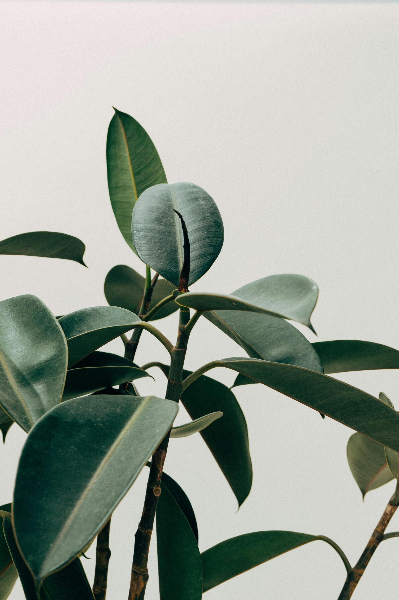
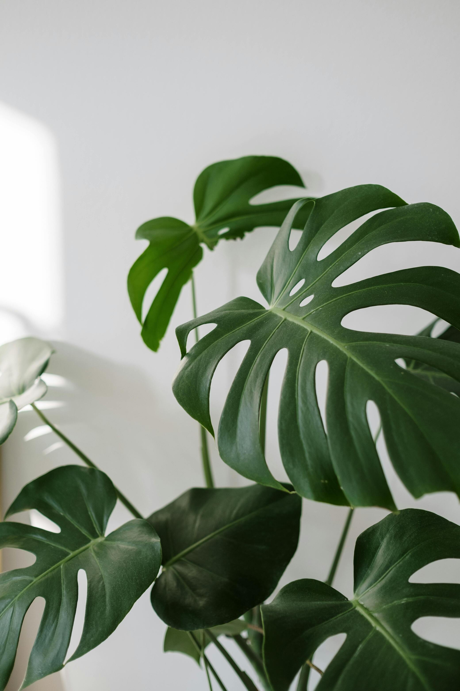
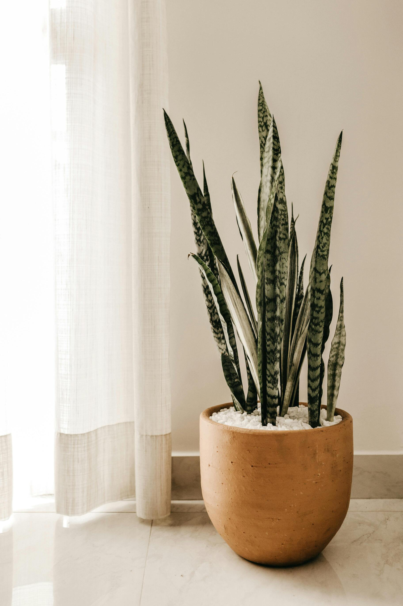

PLANTAS PARA CADA NECESIDAD
Descubre la planta ideal según luz, agua y ubicación.

Es una planta de interior resistente y fácil de cuidar, conocida por sus hojas
largas,
arqueadas y verdes con franjas blancas. Es excelente para purificar el aire y tolera
diversas condiciones de luz, aunque prefiere luz indirecta y riego moderado.

Son árboles, arbustos o plantas trepadoras, populares como plantas de interior y
exterior. Destacan por su follaje denso, raíces aéreas y fácil adaptación. Prefieren
luz
indirecta, riego moderado y buena humedad ambiental.

Es un género de plantas de la familia Marantaceae, nativo de América tropical,
principalmente de Brasil y Perú, muchas de las especies son populares como plantas
hogareñas.

Es una planta tropical de la familia Araceae. Originaria de América Central, es
popular
como planta de
interior debido a su apariencia exótica y fácil cuidado. Prefiere luz indirecta,
alta
humedad y riego moderado.

Es una planta de interior muy resistente y fácil de cuidar, conocida por sus hojas
en
forma de corazón y su capacidad para purificar el aire. Puede crecer en agua o
tierra,
tolera poca luz y requiere riego moderado. Es una planta trepadora o colgante, ideal
para decorar interiores.

También conocida como lengua de suegra, es una planta de interior muy resistente y
de
bajo mantenimiento. Tiene hojas largas, verticales y rígidas con tonos verdes y
bordes
amarillos en algunas variedades. Tolera poca luz, requiere riego mínimo y es
excelente
para purificar el aire.